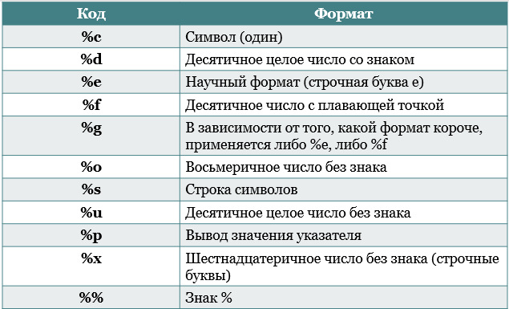
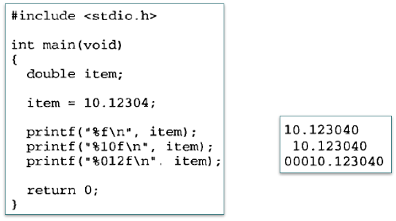
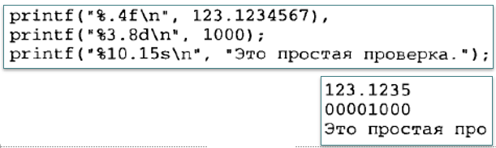
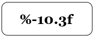
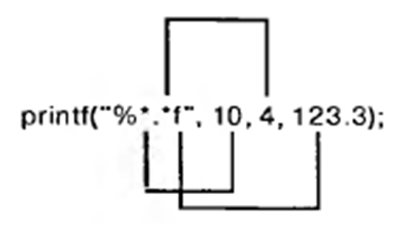

Вывод данных
Стандартные функции вывода информации
Функции ввода-вывода, определенные стандартом языка С, используют заголовочный файл stdio.h. В программах на языке C++ можно применять <cstdio>
Стандартные функции вывода информации
- Часто применяют:
puts(S)– вывод строки символов S с переходом на начало новой строкиprintf(const char * управляющая_строка, список_вывода)
- Управляющая строка состоит из:
- управляющих символов;
- спецификаторов формата.
Спецификаторы формата
Количество аргументов в списке вывода printf() должно совпадать с количеством спецификаторов формата, указанных в управляющей строке, причем они попарно сравниваются слева направо. Например, вывод двух чисел, целого - переменная n, с плавающей точкой - перемення x:
printf("Значение n = %d, значение x = %f", n, x);
Основные спецификаторы формата: 
Модификация формата вывода
- Спецификаторы формата могут иметь модификаторы, дополняющие их смысл:
- изменять минимальную ширину поля,
- количество цифр после десятичной точки,
- выполнять выравнивание.
Модификатор формата указывается между символом процента и кодом формата.
Результат модификации зависит от типа выводимых данных.
Модификатор ширины поля вывода:

Модификатор точности
Модификатор точности указывается после модификатора ширины поля (если он есть). Этот модификатор состоит из точки, за которой следует целое число. Точный смысл модификатора зависит от типа данных, к которым он применяется:

Модификатор выравнивания
По умолчанию вывод выравнивается по правому краю.
Вывод можно выровнять по левому краю, поставив после символа % знак “минус”:

Универсальный модификатор *
Ширину поля и точность представления числа можно задавать переменными. Для этого вместо точных значений в спецификаторе следует указать символ *. При сканировании строки вывода функция printf() поочередно сопоставляет модификатор * с каждым аргументом.
